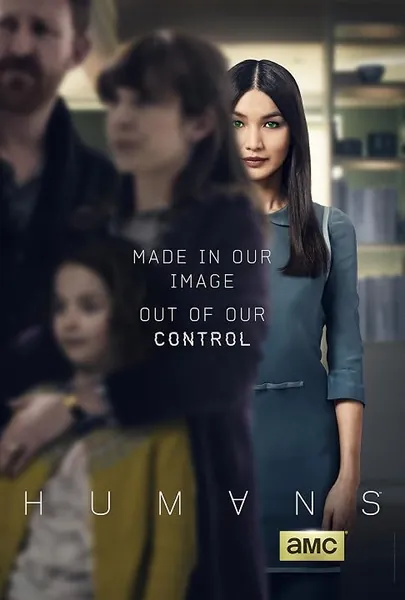

Сериал · 2015 · ИИ, Фантастика
В мире, где синты — человекоподобные слуги — стали обычными бытовыми приборами, одна семья приобретает такого робота и обнаруживает, что их экземпляр отличается от остальных. Сериал превращает тему домашнего искусственного интеллекта в серьезные вопросы: может ли машина чувствовать боль, что мы должны существам, созданным нам служить, и кто здесь неандерталец, а кто — сапиенс? Это ремейк шведского сериала «Настоящие люди», снятый с британской сдержанностью и проникнутый подлинным гуманизмом.
In a world where synths — humanoid servants — are household appliances, a family buys one and finds their model is not quite like the others. The series turns 'domestic' AI into real questions: can a machine feel pain, what do we owe beings we built to serve us, and who here is the Neanderthal and who the sapiens. A remake of the Swedish Real Humans, made with British restraint and genuinely humane.